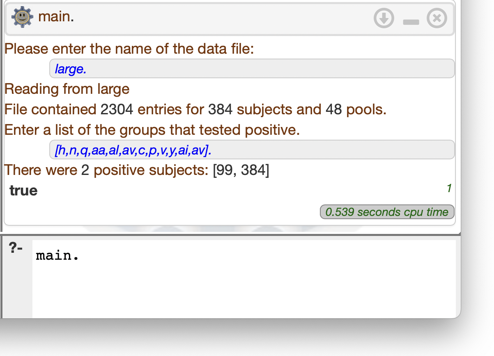

As Covid started spreading in the spring of 2019, an Israeli research team reported an approach to pooled testing that uses techniques from computer science to improve the efficiency: Subjects' samples are added to multiple pools, but arranged carefully so that we can deduce which subjects tested positive without having to test each individually. In one of their examples, they were able to evaluate 384 subjects with only 48 tests!
Assume that subject 5 is Covid positive. That would lead pools B, D, and E (shown in red below) to test positive. The algorithm can tell that only subject 5 is responsible for these positive pools: Not only is it in every pool that tested positive, but there aren't any negative pools containing 5. Subject 4 is in several of the positive pools as well, but is also in pool C, which tested negative. That's evidence that subject 4 isn't responsible for the positive results. (The results for pool C could have been a false negative, but we'll assume for this assignment that the tests are 100% accurate. It would be an interesting extension to think about how to handle false positives or negatives though.)
The savings in this example weren't very dramatic. We determined the status of 8 subjects with 6 tests. That's still better than having to do 8 tests, but the process gets more efficient as it scales up to larger numbers of subjects. What if several subjects are positive? Will this approach still work? Imagine that subjects 0 and 5 are both positive. The diagram below shows all of the pools containing 0 and/or 5 in red — those groups would all test positive.
The good news is that the algorithm would still be able to determine that 0 and 5 are positive — they're in pools that tested positive, and they're not in any negative pools. Unfortunately, that's also true for subjects 2 and 4, so we'd mistakenly conclude that they're Covid positive as well. That can happen if the number of positive subjects is large with respect to the number of pools, so this approach works best for fairly low positivity rates.
The data is stored in a list of data tuples, one for each "file". A data tuple contains two terms: An atom giving the "name" of the file, and a list of in tuples, each of which contains a subject ID and the name of a pool containing the subject's sample. A portion of the data in the starter file is shown below to illustrate its structure:
Once you've retrieved the appropriate list of[ data(small, [in(0,a), in(2,a), in(3,a), in(7,a), ...]), data(large, [in(1,a), in(9,a), in(17,a), in(25,a), ...]) ]
in tuples, you can use any representation of the pool assignments you wish. You could assert each of them as facts, or example, or use list-processing techniques to work with the list of tuples directly. I suggest implementing the detection algorithm in pieces. Start by defining a negative predicate that takes a subject ID and a list of pools that tested positive, and succeeds if the subject does not have Covid. (They're in the clear if we ever find them in a non-positive pool, like subject 4 in the example above. Subject 4 is in a couple of positive pools, but they're also in pool b which is negative so they're clear.) Then define a positive predicate that succeeds if a subject does have Covid. (This is almost as simple as saying they're positive if they're not negative.) Finally, once negative is working, define a predicat that uses findall or setof or bagof to collect all possible subjects testing positive.
Here's what that last test run looked like in Swish:?- main. Please enter the name of the data file: small. Reading from small File contained 24 entries for 8 subjects and 6 pools. Enter a list of the groups that tested positive. |: []. There were no positive subjects. true . ?- main. Please enter the name of the data file: small. Reading from small File contained 24 entries for 8 subjects and 6 pools. Enter a list of the groups that tested positive. |: [b,d,e]. There was one positive subject: 5 true . ?- main. Please enter the name of the data file: small. Reading from small File contained 24 entries for 8 subjects and 6 pools. Enter a list of the groups that tested positive. |: [a,c,b,d,e]. There were 4 positive subjects: [0,2,4,5] true . ?- main. Please enter the name of the data file: large. Reading from large File contained 2304 entries for 384 subjects and 48 pools. Enter a list of the groups that tested positive. |: [a,i,q,y,ag,ao]. There was one positive subject: 1 true . ?- main. Please enter the name of the data file: large. Reading from large File contained 2304 entries for 384 subjects and 48 pools. Enter a list of the groups that tested positive. |: [b,j,r,z,ah,ap]. There was one positive subject: 2 true . ?- main. Please enter the name of the data file: large. Reading from large File contained 2304 entries for 384 subjects and 48 pools. Enter a list of the groups that tested positive. |: [h,n,q,aa,al,av,c,p,v,y,ai,av]. There were 2 positive subjects: [99,384] true.
